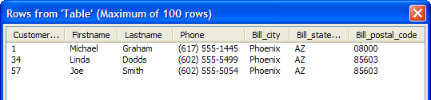

Updating Records in a Back-End Database
To update records, you use the SQL UPDATE command. The general syntax of the command is:
|
UPDATE tablename SET fieldname1 = value1, fieldname2 = value2 .... WHERE fieldname3 = value3 ... |
Let's update the city, state, and zip fields in the customer table. First, we will check to see what their current values are, second we will update them, and last we will check to see if the updates worked. From the Interactive window:
|
dim conn as SQL::Connection dim rs as SQL::ResultSet dim qry as C ? conn.open("{A5API=Access,FileName='C:\Program Files\a5v8\MDBFiles\Alphasports.mdb',UserName='Admin'}") = .T. qry = "SELECT customer_id, bill_city, bill_state_region, bill_postal_code FROM customer" |
Execute the SQL SELECT statement and return a ResultSet.
|
conn.execute(qry) rs = conn.resultset |
Display the values in the first record of the result set for the customer_id, bill_city, bill_postal_code, etc. fields.
|
? rs.data("customer_id") = 1 ? rs.data("bill_city") = "New York" ? rs.data("bill_postal_code") = "01000" ? rs.data("bill_state_region") = "NY" conn.close() |
To update data you use the SQL::Connection::Execute(?) method. Note that the fields to update and the corresponding value are specified in a comma delimited list of name/value pairs.
|
dim conn as SQL::Connection dim sql_update as C dim qry as C qry = "SELECT customer_id, bill_city, bill_state_region, bill_postal_code FROM customer" sql_update = "update customer set bill_city = 'Phoenix', bill_postal_code = '08000', bill_state_region = 'AZ' where customer_id = 1" ? conn.open("{A5API=Access,FileName='C:\Program Files\a5v8\MDBFiles\Alphasports.mdb',UserName='Admin'}") = .T. ? conn.execute(sql_update) = .T. |
To view the results, execute a new query and preview the ResultSet.
|
conn.execute(qry) rs = conn.resultset SQL_ResultSet_Preview(rs) |

Close the connection.
|
conn.close() |
Limitations
See Also
Working with SQL Databases, SQL::Connection::Execute(?)